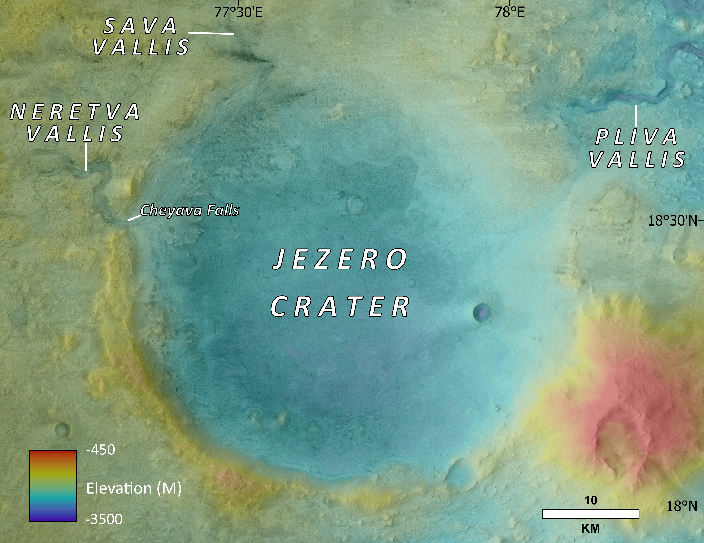

INTERPLANETARY SURVIVAL GUIDE
Explore Mars.
Plan Your Journey.
Plan a simulated Marswalk using orbital and surface imagery.
REGION JEZERO CRATER18.4° N · 77.6° E (approx. region)
Simulated segments ↗
5 segments
SIMULATION / NO MEASURED DISTANCE
Journey Status ◷
Ready
SIMULATED JOURNEY
Demo Risk Score · SIM ◈
25 / 100
SIMULATED SCORE • LOWER IS BETTER
Route Stops ⌾
2 stops
SIMULATED · ROUTE STOPS
Current Task
Jezero surface overview
HRSC-derived regional map with conceptual route overlays

● ORBITAL DATA / HRSC + SIMULATED MISSION LAYERS
SIM ROUTE
SIM HAZARD
SIM SITE
Concept overlay: shapes and coordinates are not georeferenced or safety
validated.